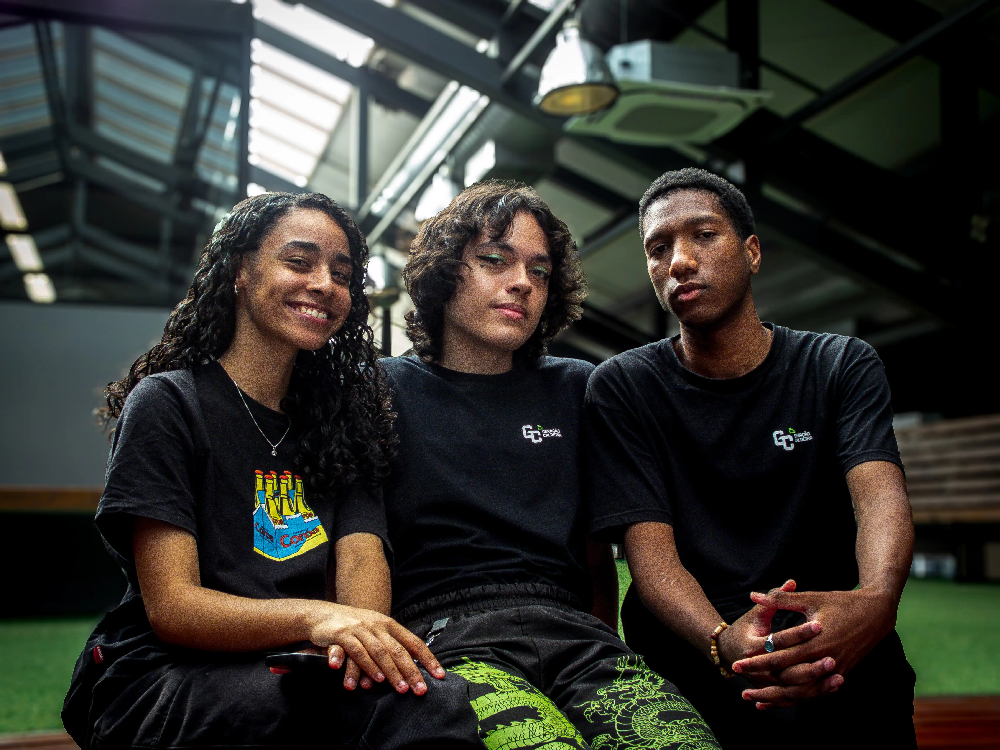

Galeria de Fotos



Henrike é um entusiasta da fotografia, explorando técnicas e composição para capturar momentos únicos. Apaixonado por imagem e narrativa visual, busca aprimorar seu olhar fotográfico através da prática e do estudo. Também é estudante de Tecnologia da Informação, unindo criatividade e inovação em seus projetos.